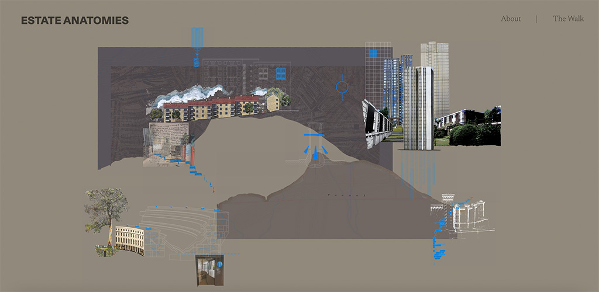
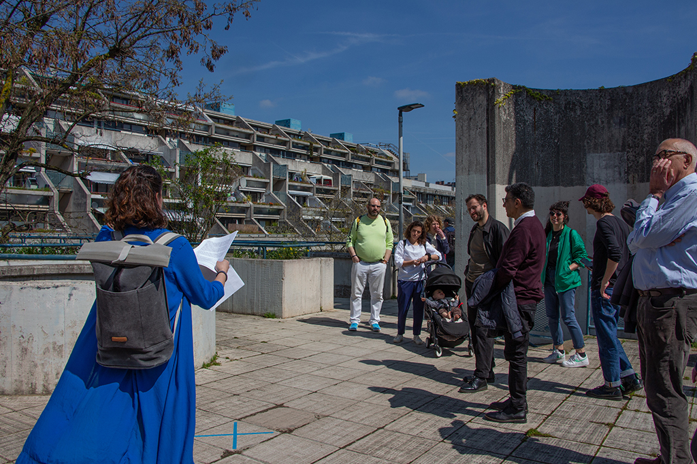
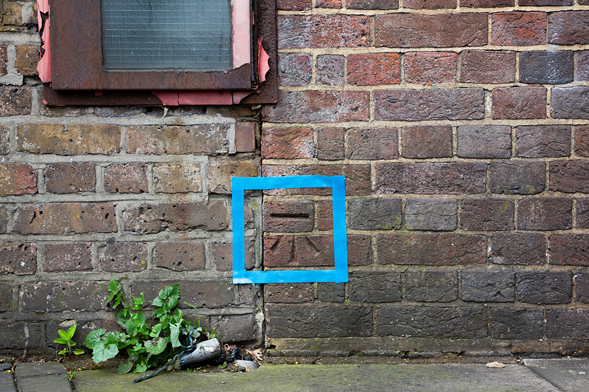

Natalia Orendain: Estate Anatomies
In December 2022, we commissioned Natalia Orendain to explore how the built environment shapes how we dwell in the city. The project compares three housing estates in North Camden: Chalcots, Hilgrove and Alexandra and Ainsworth all of which are connected by a dense network of railway tracks carrying people and freight to different parts of London and far beyond. Natalia’s work explored how the estates’ distinct histories of landownership shape their architectures and material forms as well how the railway has shaped the neighbourhood as a whole. The placement of bin chutes, the sociability of shared landings, and the orientation of windows all have the ability to influence how we live together. Weaving together residents’ stories, architectural histories, soil data, and building schematics, Natalia created:
- A digital platform that peels away the layers of the buildings in which we dwell - a guided walk with a trail map - In June 2023, we sat down with Natalia for an interview on how she approaches her work.

